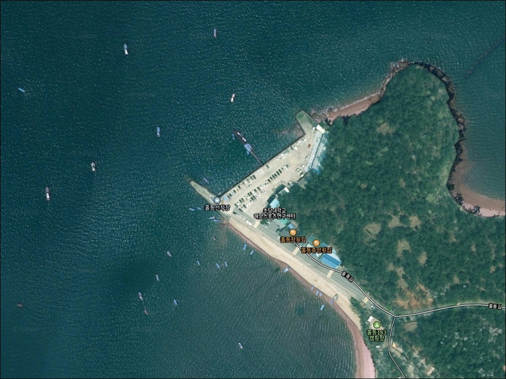
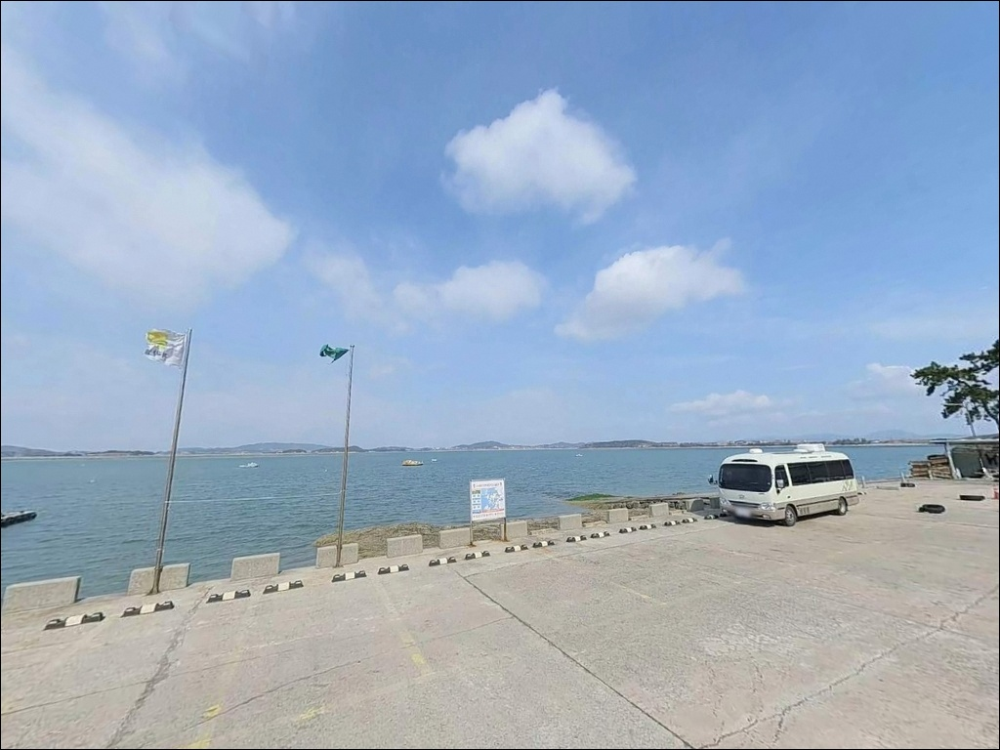
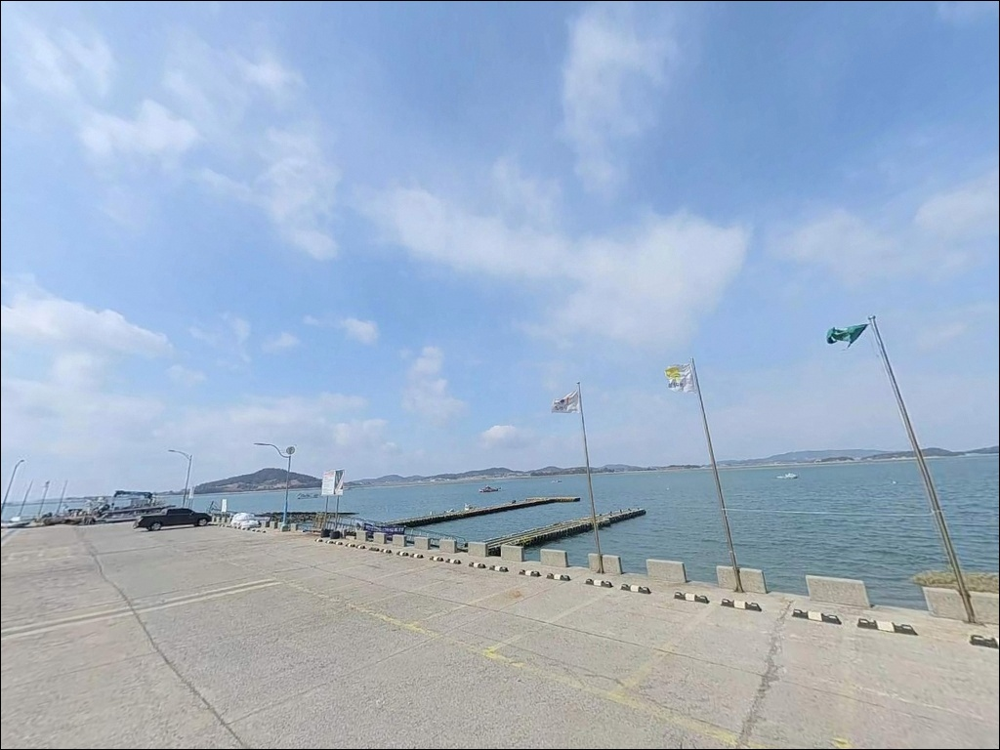
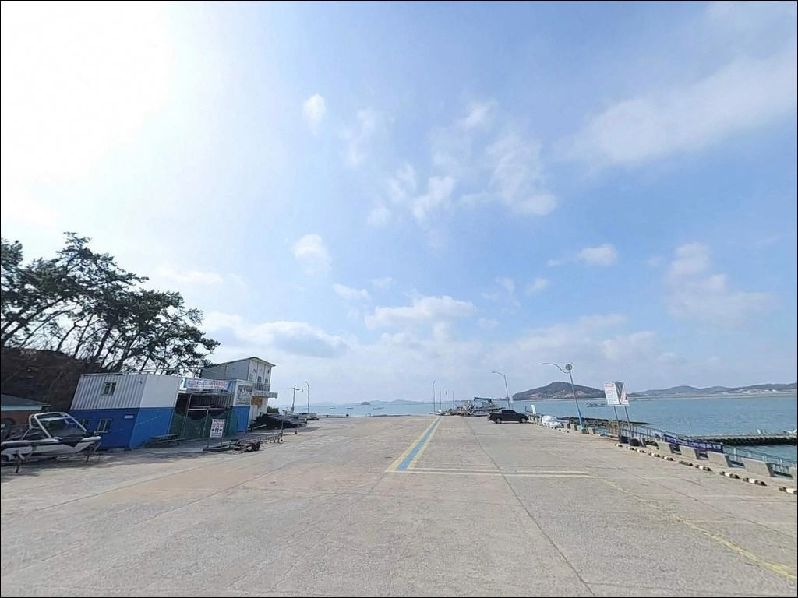
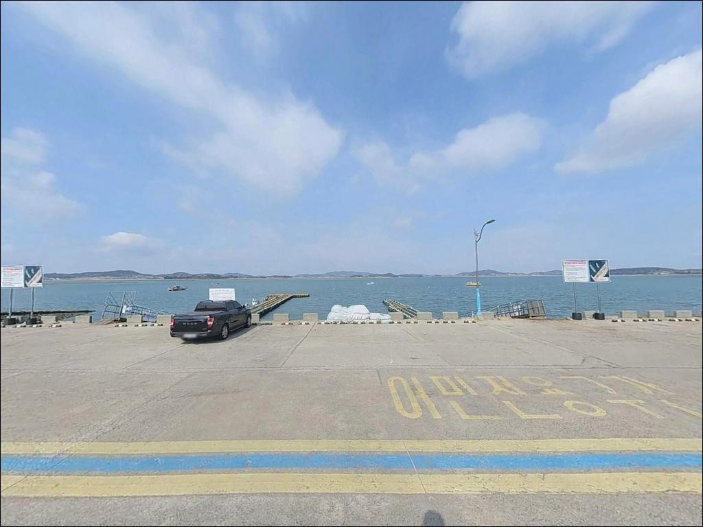
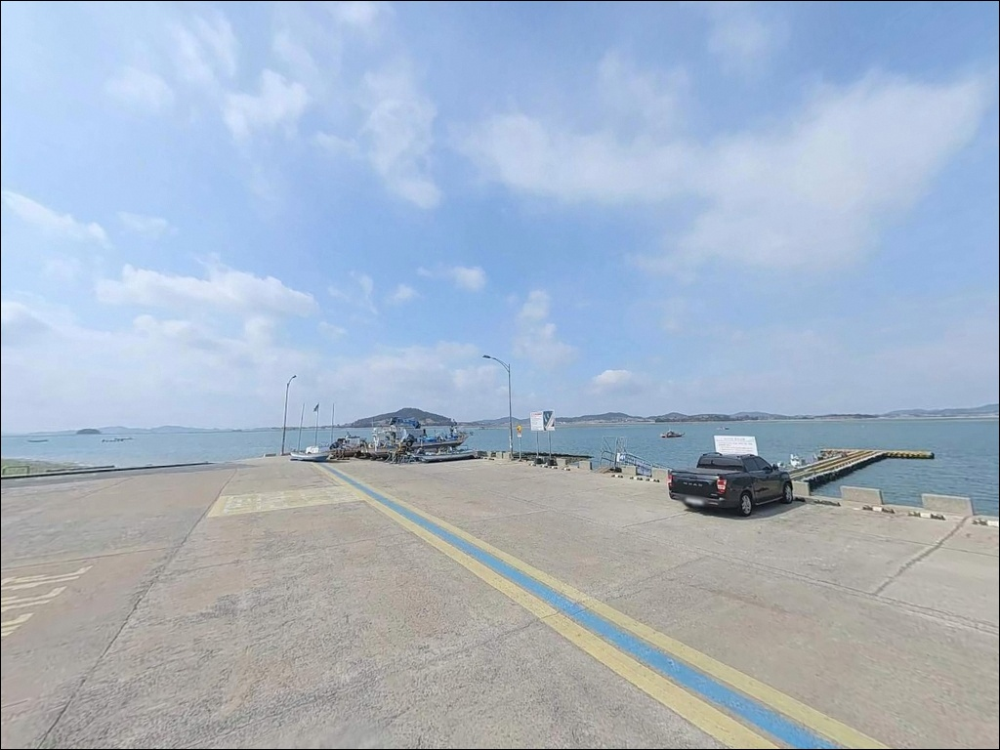
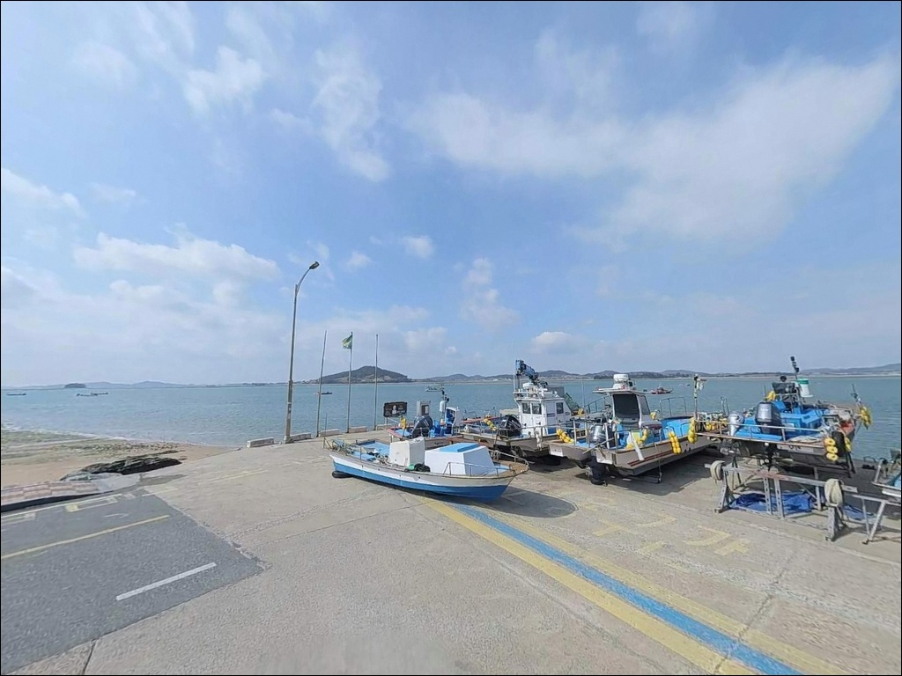
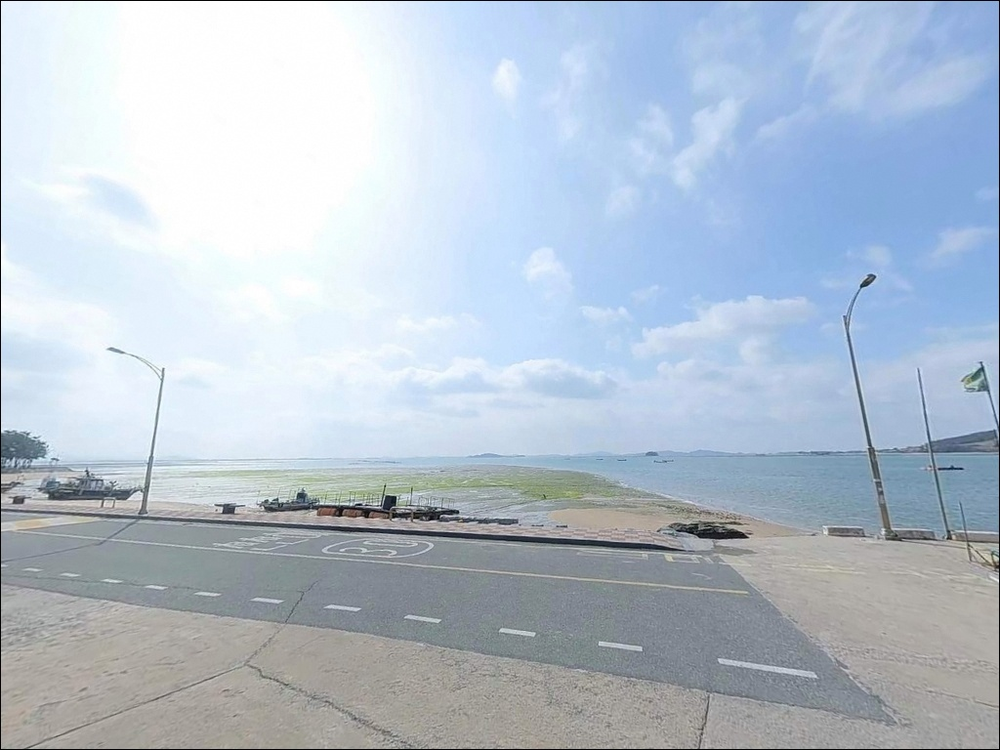
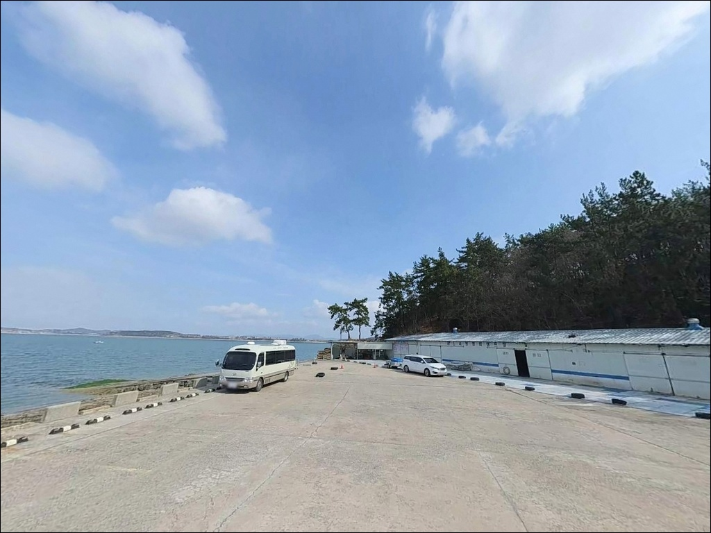

홀통선착장, 전남 무안군 자연 그대로의 분위기에서 차박, 낚시를 즐기기 좋은 포인트


포인트 안내
홀통선착장
전남 무안군 현경면 오류리 1367-2
탄도만 안쪽 갯벌 구조에서
간조 시간대에 도착하면
선착장 아래로 갯벌이 드러나
채비를 던질 수 있는 수면 자체가 사라집니다.
물때를 계산하지 않은 방문은
이 포인트에서 가장 흔한 헛걸음의 원인입니다.
홀통선착장은 해제반도 서쪽,
전남 무안군 현경면 오류리에 자리한
탄도만 안쪽 내만형 선착장입니다.
조수간만의 차가 심한 서해 갯벌 특성이
그대로 반영된 구조로,
감성돔 빠지(좌대) 낚시의 출발 거점으로
무안 낚시인들에게 알려진 포인트입니다.
이 글은 홀통선착장의
지형 조건과 물때 기반 낚시 여건,
진입 환경, 차박 체류 조건을 중심으로 정리합니다.
조황 단정이나 특정 어종 보장은
이 글의 범위에 포함되지 않습니다.

1. 진입 동선과 포인트 접근성
홀통선착장은 현경면 오류리 방향 지방도에서
해안 쪽으로 진입하는 구조입니다.
홀통해수욕장·유원지와 인접해 있어
전체적인 접근성 자체는 나쁘지 않지만,
선착장 방면으로 들어서는 구간에
외길 구간이 포함되어 있습니다.
카라반이나 대형 차량이라면
반대편 차량과 교행이 어려울 수 있어
출발 전 위성지도로 진입로 구조를 미리 확인하는 것이 좋습니다.
선착장 회차 공간은 넉넉하지 않습니다.
홀통 일대에서 선착장 끝에서 차를 돌리다
해상으로 추락한 사고가 실제로 발생한 이력이 있습니다.
선착장 접안부 가까이 주차할 때는
해안선과의 거리를 반드시 확인해야 하며,
야간 이동 시에는 특히 조심해야 합니다.
주차는 홀통해수욕장 인근 주차장을
기본으로 활용하는 방식이 안정적입니다.
유원지·해수욕장 주차시설은 공식 확인된 공간이며,
선착장과의 거리가 멀지 않아
낚시 장비를 이동하는 데 큰 어려움은 없습니다.

2. 차박 환경과 야간 체류 여건
홀통해수욕장 일대는 해송 숲과 백사장이 이어지는
자연 유원지 구조입니다.
탄도만 안쪽 내만 특성상 파도 영향은 적은 편이며,
민가 밀집도가 낮고 해변이 넓어
낚시를 마친 후 조용히 하룻밤 머무는
차박 거점으로 환경 자체는 나쁘지 않습니다.
서해 특성상 기상 변화는 빠른 편이라
바람 방향과 세기는 사전에 반드시 확인해야 합니다.
야간 조명은 유원지 인근 가로등이 일부 존재하지만
선착장 끝단 쪽은 어둠이 깊을 수 있습니다.
개인 헤드랜턴은 필수이며,
야간 선착장 접근 시에는
해안선과의 거리를 항상 의식해야 합니다.
차박을 계획하고 있다면
홀통해수욕장 캠핑장이 선택지가 됩니다.
화장실·샤워실·취사장이 갖춰진 시설이며,
선착장과 인접한 위치입니다.
홀통183 캠핑장도 해수욕장 인근에 위치해
노지보다 편의성을 원하는 낚시인에게
현실적인 대안이 됩니다.

3. 주변 편의시설 및 인프라 현황
홀통해수욕장에는 주차장과 화장실이
공식 확인된 시설로 갖춰져 있습니다.
선착장과 바로 인접한 위치라
낚시 중 기본 편의시설 이용에 무리가 없습니다.
반경 3km 이내에 편의점·마트 등
확정된 편의시설 정보는 이번 조사에서 확인되지 않았습니다.
현경면 소재지 방향으로 이동해야
식당과 소규모 마트를 이용할 수 있습니다.
식수·얼음·낚시 소품·연료는
출발 전 완비하고 진입하는 것이 현실적입니다.
응급 상황 발생 시 무안읍까지 이동 거리가 상당하므로
비상약품과 비상 연락처는 미리 준비해 두어야 합니다.
무안군청 관광문화과(061-450-5114)가
공식 문의처로 확인됩니다.

4. 물때를 먼저 계산해야 낚시가 가능한 이유
홀통선착장은 탄도만 안쪽 갯벌 구조입니다.
조수간만의 차가 크기 때문에
간조 시간대에는 선착장 아래 갯벌이 드러나고,
수심이 확보되는 구간은
만조 전후 2~3시간이 현실적인 낚시 가능 시간대입니다.
바다타임에서 무안 현경면 기준 물때를 확인하고
만조 타이밍에 맞춰 도착 시각을 정하는 것이
이 포인트 방문의 기본 전략입니다.
탄도만 안쪽 갯벌 구조에서는
물때를 맞추지 않으면 낚시 자리 자체가 존재하지 않습니다.
이 판단은 이 포인트에서
조과보다 앞서 확인해야 할 전제 조건입니다.
서해 특성상 기상 변화가 빠른 편이므로
당일 아침 기상청 예보를 한 번 더 확인하고
바람 방향과 세기를 파악해야 합니다.
갯벌 지형이라 밑걸림은 상대적으로 적지만
여분 채비는 넉넉하게 준비하는 편이 좋습니다.
선착장은 어선 조업 공간이기도 합니다.
어선 이동 동선을 막지 않는 자리 선택과
어구 접촉 금지는 기본 매너입니다.

5. 지형 기반 낚시 여건 분석
홀통선착장은 해제반도 서쪽,
탄도만 안쪽에 위치한 내만형 선착장입니다.
탄도만은 수심이 얕고 조수간만의 차가 심한 갯벌 구조로,
선착장 끝단 기준 만조 시 수심은
약 3~5m 내외로 추정됩니다.
바닥은 모래와 펄이 섞인 완만한 사질 구조로,
갯바위 낚시와는 성격이 다른 포인트입니다.
조류는 내만 특성상 직접적인 강한 흐름보다
완만한 흐름이 유지됩니다.
다만 선착장 끝단과 수로 방향은
상대적으로 수심이 깊어지는 구간으로,
조류 흐름이 살아 있는 만조 타이밍에
포인트 핵심 구간이 형성됩니다.
썰물 중 갯골 위치를 파악해두면
다음 들물 때 공략 자리를 잡는 데 도움이 됩니다.
무안군은 홀통 해역에 점농어와 낙지를
정기적으로 방류하는 사업을 시행하고 있습니다.
이를 바탕으로 이 해역에서 기대해볼 수 있는 어종은
감성돔, 농어(점농어), 낙지, 붕장어 등으로 추정됩니다.
방류 어종과 실제 조황은 별개이므로
최신 조황은 출조 전에 반드시 검색해보시기 바랍니다.


6. 홀통에서 조과 차이를 만드는 낚시 방식 선택법
이 해역에서 가장 대표적인 낚시는
빠지(좌대)를 임대해 앞바다로 나가는 선상낚시입니다.
탄도만 안쪽 얕은 수심을 벗어나
수심이 확보된 구간으로 직접 이동하기 때문에
도보 도착보다 조황이 안정적인 편입니다.
4월초 감성돔 시즌이 개막하면
40~55cm급 굵은 씨알이 주를 이루며,
5월말까지 마릿수 조황이 이어지는 경향이 있습니다.
감성돔 시즌 초반인 4월에는 원투낚시가,
5월 이후에는 릴찌낚시가
이 해역에서 더 유리한 방식으로 알려져 있습니다.
도보 원투낚시는 만조 전후 시간대에
선착장 끝단과 수로 방향을 공략하는 방식으로,
도다리·보리멸·붕장어도
바닥 채비로 함께 노려볼 수 있는 어종입니다.
가을 시즌에는 갑오징어와 주꾸미를 대상으로 한
루어 워킹 낚시도 가능합니다.
탄도만 내만의 완만한 수심 구조는
바닥을 천천히 탐색하는 루어 방식과
지형적으로 잘 맞는 편입니다.
가을 9월 전후가 주꾸미 시즌 피크이며,
갑오징어는 그 이후까지 시즌이 이어집니다.

7. 대안 포인트와 플랜 B 동선
홀통에서 물때가 맞지 않거나
자리 여건이 여의치 않을 때
가장 먼저 이동할 수 있는 포인트는
무안 톱머리 방파제입니다.
망운면 톱머리해수욕장 인근에 위치하며,
9월 주꾸미 시즌에 인기가 높은 곳입니다.
홀통과 어종 구성이 달라
시즌에 따라 두 포인트를 분리해 활용하는 전략이 효율적입니다.
감성돔을 목표로 할 경우
무안 청계면 구로리 선착장이 대안입니다.
4월 중순~5월 중순 시즌에
선착장 주변에서 감성돔이 낚인다는 현지 후기가 있는 곳으로,
홀통과 같은 탄도만 권역 안의 포인트라
이동 거리도 부담이 없습니다.
차박 거점을 바꿔야 할 경우
무안갯벌캠핑장(해제면 유월리)이
현실적인 대안입니다.
잔디·파쇄석 사이트 15개와 함께
전기·화장실·샤워실이 갖춰진 정식 캠핑장으로,
홀통 노지 체류가 여의치 않을 때
편의성 높은 선택지가 됩니다.

물때를 알면 홀통선착장이
다르게 보입니다
감성돔 빠지 낚시를 계획 중인 낚시인이라면
홀통은 탄도만 권역에서 검증된 거점 포인트입니다.
도보 낚시를 선택할 경우에는
물때 계산이 출조의 절반을 결정하며,
만조 전후 2~3시간이라는
짧은 황금 구간을 어떻게 활용하는지가
조과의 차이를 만듭니다.
홀통해수욕장 인근의 주차장과 캠핑장 덕분에
낚시 후 1박 차박 일정을 더하기에
환경 자체는 나쁘지 않습니다.
다만 선착장 끝단 주차 위치 확인,
갯벌 진입 시 밀물 속도 주의,
물때·기상·자급 준비,
이 세 가지를 갖추고 간다면
서해 갯벌 포인트의 매력을 제대로 느낄 수 있는 곳입니다.
탄도만의 잔잔한 내만에 자리를 잡고
들물이 차오르는 시간을 기다리며 채비를 던지는 낚시,
물때만 맞으면 기억에 남는 출조가 됩니다.